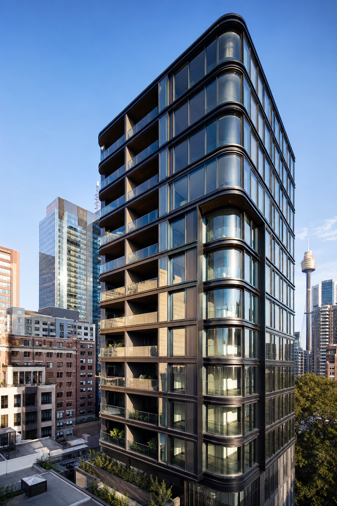
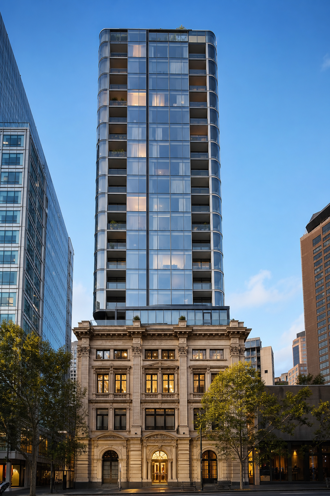
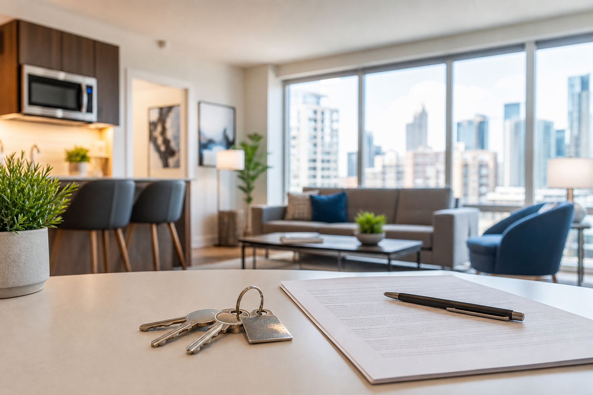
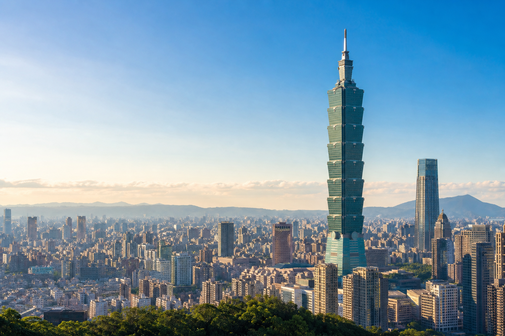

Tony Lam 進入房地產產業。
環球置業 Global Realty自 2017 年成立以來，始終扎根澳洲房地產市場，以專業視角與全球視野，累計代理超過 300 個優質地產項目，為來自世界各地的客戶提供高品質、可持續的資產配置解決方案。
我們不僅是房產交易的連接者，更以扎實的資產管理與運營能力，陪伴客戶從選址、購置到後續管理，實現資產價值的穩健成長。標語「選擇環球置業，就是選擇放心」，即是我們對每一份信賴的承諾。

環球置業專注服務全球買家澳洲置業全流程需求，公司匯聚 10 支以上資深管理團隊、200 餘名銷售精英，核心管理人員人均擁有十年以上澳洲房產行業實戰經驗。
數據來源： 環球置業官方公開資料
Development History
從 Tony Lam 投身房地產產業，到澳華國際集團橫跨澳洲與亞太的一站式布局，環球置業見證並參與每一個重要里程碑。
Tony Lam 進入房地產產業。

以貸款業務起家，於雪梨 Burwood 創辦澳華國際。

澳華國際總部於雪梨市中心金融區成立；同年與鼎豐集團合作，代理房地產專案。
寧波總部成立，為澳華國際鞏固海內外一站式服務奠定基礎。

澳華國際展開多據點布局，為海內外客戶提供金融、貸款及房地產投資服務。

「分行化」布局於澳洲各地設立 73 家公司；2014 年於 Epping 開發首個建案「VILLA DE MAI」。
澳華國際於墨爾本市中心金融區設立墨爾本總部。

墨爾本環球置業 Burwood 分行、雪梨環球置業 World Square 分行正式啟用。
成都總部正式成立，進一步鞏固澳華國際海內外一站式服務鏈。

墨爾本 Box Hill、Point Cook 分行開幕；環球置業開拓台灣與日本市場，深化亞洲布局。
布里斯本分行、台北 101 分行正式開幕；穩健拓展珀斯、坎培拉、阿德雷德，並積極布局泰國、越南、印尼等海外市場。
Service System
澳華國際集團是澳洲華人市場的指標品牌，自 2005 年於雪梨成立。業務涵蓋金融貸款、房地產開發、物業管理、基金理財、法律服務、移民與留學等多元領域，形成一站式綜合服務體系。
環球置業為澳華國際集團旗下核心房地產子公司，專注澳洲新建案、中古屋交易及租賃代管服務，並與《財富》世界 500 大企業及澳洲知名開發商深度合作。憑藉集團實力嚴選優質物件，精準媒合自住與投資需求，提供全程一站式服務，協助客戶穩健且有效率地布局澳洲房地產。

Strong Team
環球置業匯聚資深合夥人、銷售總監、物業經理與專業後台團隊，核心管理人員人均擁有十年以上澳洲房產行業實戰經驗。
環球置業高級合夥人

深耕金融與房地產雙領域近 14 年
Becky 為環球置業高級合夥人，具備 10 年以上金融與房地產雙領域經驗，深耕雪梨並布局全澳市場。畢業於 UNSW 金融碩士，持有專業財務規劃師資格，曾任職多家澳洲大型銀行，將專業金融觀點與房地產實務結合，為集團具代表性的標竿管理者。
環球置業高級合夥人

澳洲房地產財稅規劃專家，為跨境投資提供全方位保障
Tony 為環球置業高級合夥人，持有澳洲註冊會計師資格，投入澳洲房地產領域超過 12 年。多次榮獲個人及團隊銷售冠軍，已協助 300 多個海外家庭完成澳洲置產規劃，量身規劃涵蓋全週期的澳洲資產配置方案。
環球置業銷售總監

深耕房地產近 10 年・集團核心資深成員
Jasmine 具備近 10 年澳洲房地產產業經驗，長期陪伴集團從創立走向成熟，深度參與開發與代理專案全流程。長期深耕雪梨市場，熟悉公寓、別墅及土地建屋方案，以細緻服務累積良好口碑。
環球置業銷售總監

10 年經驗・墨爾本中古屋專家
Alan 深耕澳洲房地產產業 10 多年，是墨爾本中古屋市場的資深實務專家。曾先後任職於 21 世紀不動產、高力國際、富力澳洲等機構，掌握在地中古屋市場邏輯與行情走勢。
環球置業高級合夥人

資深房地產專業人士・深耕布里斯本市場
Nick 具備 10 年以上澳洲房地產產業經驗，曾任職於富力集團環球物業，參與超過 30 個大型房地產專案。個人累計銷售總額達 3.5 億澳元，是兼具專業實力與產業口碑的資深人士。
環球置業高級合夥人

台灣 OUTLET 通路領導者，深耕高端客群
Ray 是台灣 Outlet 產業的領導人物，2002 年創辦百貨精品服飾代理公司，歷經二十餘年發展成為台灣具領先規模的進口品牌通路商，在品牌代理與通路營運領域享有卓越口碑。
環球置業銷售總監

墨爾本中古屋專家・業績標竿
Jimmy 具備 10 年澳洲房地產產業經驗，曾任職墨爾本多家知名開發商。近 5 年累計銷售總額接近 3 億澳元，獲評為環球置業官方認證核心房地產專家。
環球置業銷售總監

深耕房地產，以專業贏得信賴
Jackson 現任環球置業銷售總監，深耕澳洲房地產 14 年，熟悉公寓、聯排別墅、獨立屋及土地建屋方案。精通華語、粵語與英語，為在地及亞太投資人提供一站式置產服務。
環球置業物業經理

雪梨資深物業管理專家・短租營運顧問
Michael 深耕雪梨市場，具備 7 年物業管理與 4 年 Airbnb 短租營運經驗，熟悉住宅租賃、資產管理及短租平台全流程，為屋主提供專業可靠的一站式資產管理服務。
環球置業物業經理

雪梨房地產資產管理專家・10 年專業守護
Marco 具備 10 年租賃與管理經驗，深耕雪梨市場，從物件篩選、租客媒合到維護與風控，以標準化流程協助屋主穩健營運資產並提升價值。
環球置業物業經理

深耕墨爾本短租營運・一站式資產管家
Steve 深耕墨爾本租賃與短租營運，提供從物件評估、上架、家具配置到收益管理的一站式服務，流程透明、持續優化出租收益，讓資產管理更省心、更安心。

在環球置業，每一位第一線夥伴的成功，都有一套成熟、專業、高效的全流程後勤支援體系作為後盾。從品牌行銷、人力資源、財務風控到銷售營運，跨部門團隊以標準化流程與快速回應機制，提供從行銷素材、活動執行、人才招募到數據決策的全方位支援。
讓第一線夥伴專注服務客戶、拓展市場，不必分心處理行政庶務。

Global Footprint
環球置業穩健深化全球布局，以澳洲六城全澳服務網絡鞏固在地基礎，並以台北亞太營運中心連結東亞及東南亞主要市場。
環球置業始終秉持此一核心策略，穩健前行，持續深化全球布局。我們深耕雪梨、墨爾本、布里斯本、伯斯、坎培拉及阿德雷德六大澳洲核心城市，以全澳服務網絡，鞏固在地服務基礎。
環球置業以台北亞太營運中心作為重要策略據點，以台灣為核心連結東亞及東南亞主要城市，並在泰國、印尼、越南等重點市場精準布局，串聯區域成長動能，拓展跨境協同優勢。
未來，我們將持續深化全球協同營運、拓展市場版圖、優化服務體系，以更專業、更高效、更完整的服務能力，連結澳洲與全球市場。
*台北 101 辦公室
環球置業於台北設立區域營運中心，辦公室位於世界級地標台北 101，作為亞太重要據點，服務台灣及東南亞投資客戶。


依托澳華國際集團雄厚實力與全澳資源優勢，為客戶提供更有保障的專業置業服務。
01. 集團背書
02. 團隊實力
03. 服務內容
04. 合作關係
05. 銷售業績
06. 全球布局
台北市信義區忠孝東路四段 525 號 14–15 樓 · THE COLLECTIVE 巨蛋國際中心
台北市信義區信義路五段 7 號 · 台北 101 45 樓 A-1 室
Property Without Borders
環球置業，置業全球